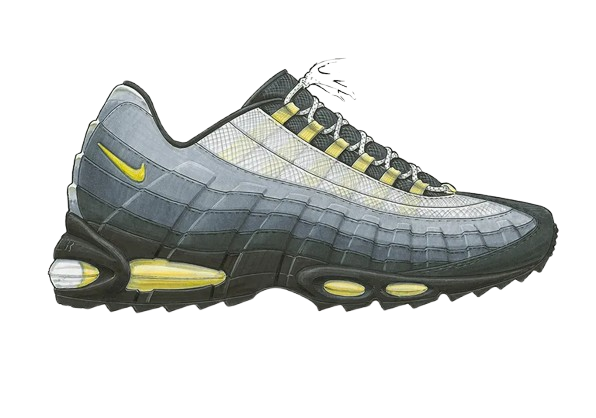
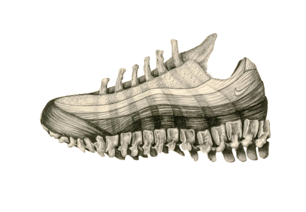

1995 - Original Release
Neon Yellow / Black "OG" colourway drops. Instant cultural impact in London and Tokyo.
From a performance runner to a streetwear icon — the story of the most iconic Air Max silhouette ever made.
Designed by Sergio Lozano and inspired by the human anatomy — the spine, ribcage, and muscle layers — the Air Max 95 was unlike anything Nike had released before. Its layered upper and full-length visible Air unit changed the game.
Neon Yellow / Black "OG" colourway drops. Instant cultural impact in London and Tokyo.
The 95 becomes a staple in grime, hip-hop, and street culture across the UK and beyond.
Corteiz, Comme des Garcons, Supreme, and more collaborate with Nike on 95 editions.
The Air Max 95 remains one of the most collected sneakers in the world.


Full-length Air cushioning in the midsole.
Inspired by the human spine and ribcage.
Earth-tone layers fading from dark to light.
Traction pattern borrowed from running DNA.
Browse the current Air Max 95 collection.
Browse Shop